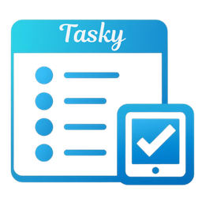

Welcome to Tasky!
Tasky is a task management application designed to help you organize your tasks efficiently. With Tasky, you can create, manage, and track your tasks with ease.


To get started, navigate to the User Guide section for detailed instructions on how to use Tasky effectively. If you're interested in the technical aspects of Tasky or want to contribute, check out our GitHub repository in the Technical Docs section.